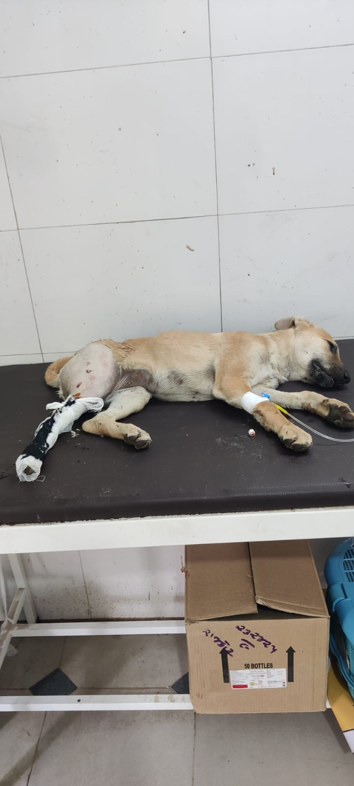
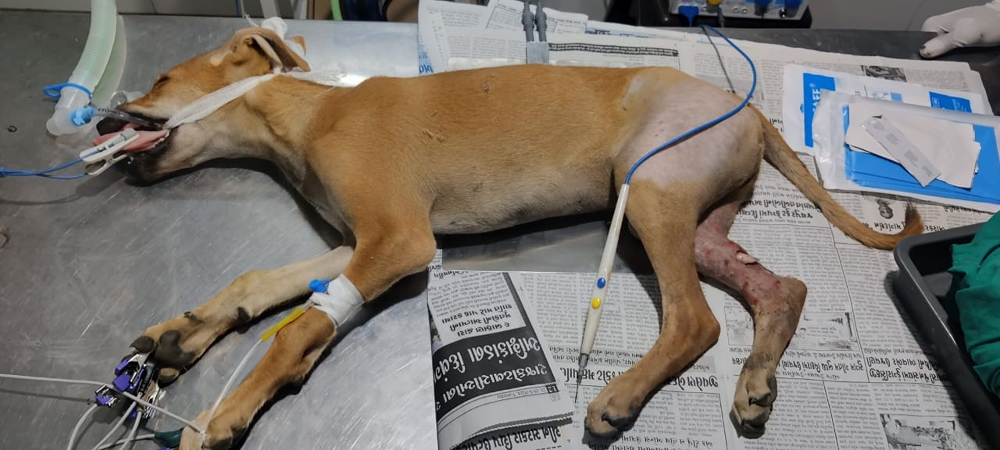
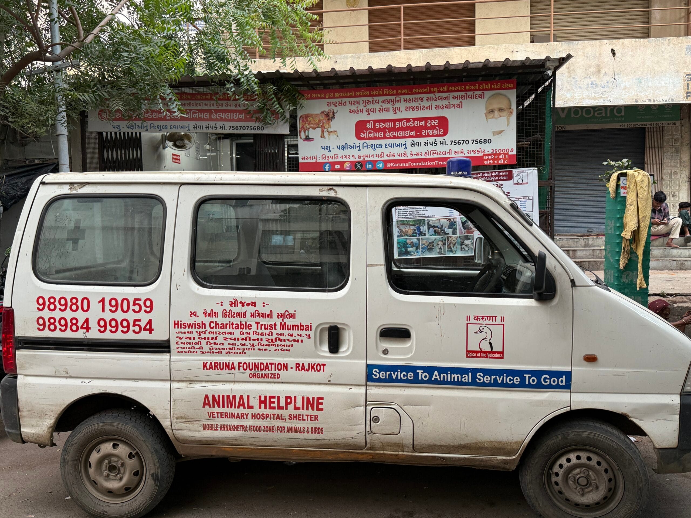
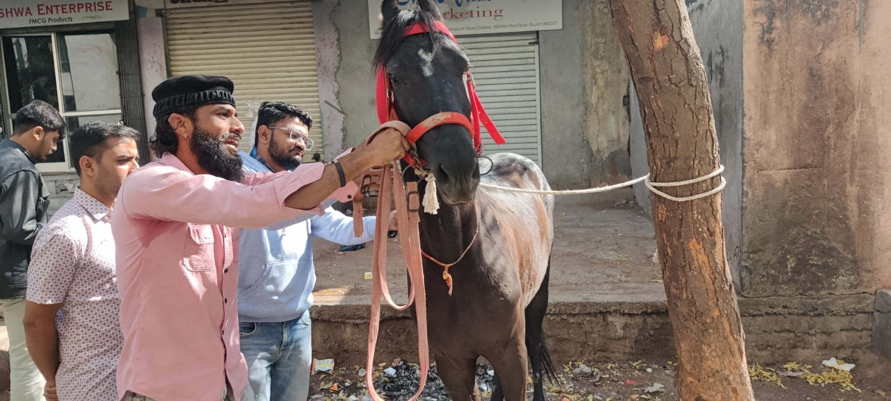
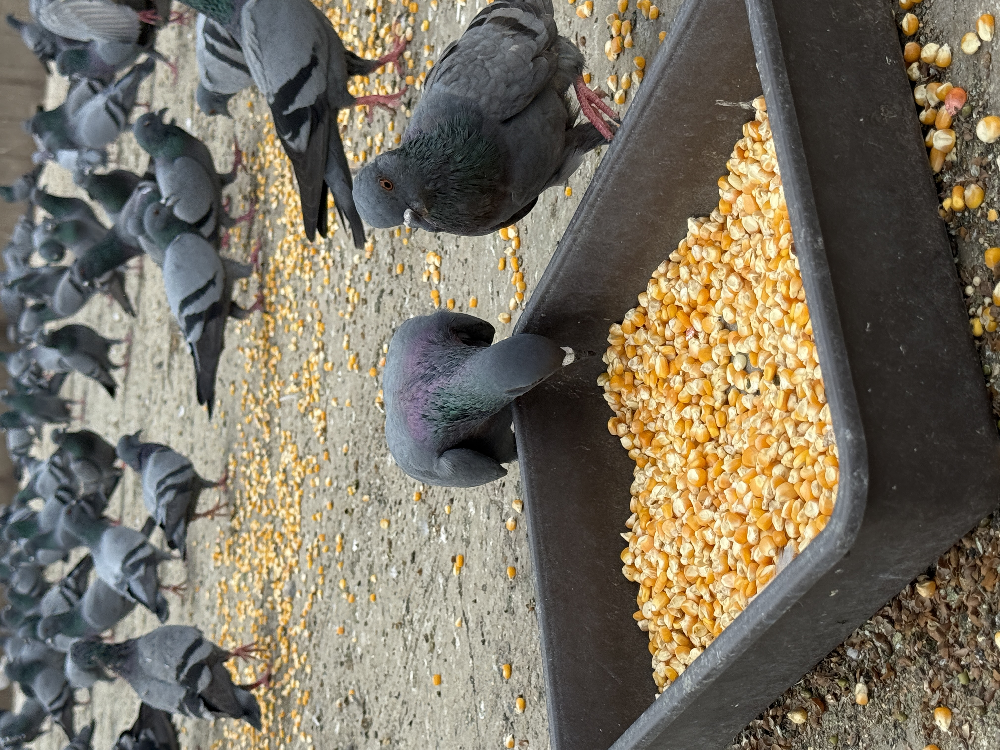
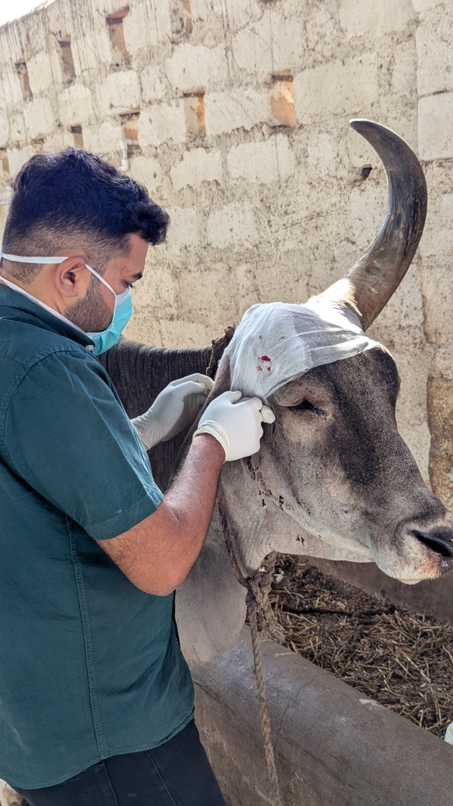

Services we provide
Care that reaches
where it’s needed.
Practical rescue, treatment and support for animals across Gujarat.
Get to Know Us
Support that moves
with compassion.
Several kind-hearted donors have supported animal welfare with generous vehicle contributions:
Supporters of animal welfare
Generosity in action.
- Rashtra Sant Param Gurudev Shree Namramuni Maharaj Saheb (Arham Yuva Group), Matru Shree Vimalben Dilipbhai Maheta and Matru Shree Umaben Mahendrabhai Maheta
- Animal Welfare Board of India
- PASCHIM GUJRAT VIJ CO LTD (PGVCL)
- Gujarat Energy Transmission Corporation Limited (GETCO)
- District Administration of Rajkot – District Collector
- Samast Mahajan
- Shree Sardar Patel Social Group, Rajkot (West)
- In memory of Late Prakashbhai Kurjibhai Pansuriya and Late Kaushaben Prakashbhai Pansuriya – Pansuriya Family
- Rishirajbhai Milindkumar Shah
- Bhabha Family
- Pravinchandra Haridas Desai, Vinod Pravinchandra Desai, and Kashmira Pankajbhai Desai
- Late Smt. Jignashaben Manubhai Maheta and Dharmeshbhai Manubhai Maheta (Tanishq Jewellers)
- Amitbhai Magiya – Hiswish Charitable Trust Mumbai
- Jigna Sudhaben Kanaiyalal Shah Donated by Neka, Reaa
- Kusumben and Bhupatbhai Sheth Family
- Sheth Shri Laljibhai D. Kanabar's Family (Manavadar)
- Late Shree Maheshbhai Mansata – Mansata Family
- Shri Andh Apang Gausewa Trust (Wakaner)
- Shri Madhoobhai & Smt. Meenalben Mehta (Romeera Foundation, UK)
- Shri Shashikant Bosmiya
- Shri Himmatlal Ghelani (via Pujya Bhaktididi – Jalaram Mandir)
- Shree giriraj foundation rajkot
How we help
Services for every
urgent need.

01
24x7 Animal Helpline
First-call support for sick, injured or stranded animals.

02
Free Veterinary Treatments
Timely treatment and compassionate support for stray animals.

03
Ambulance and Bike
Mobile rescue support that reaches animals in need.

04
Animal Rescue & Rehabilitation
Safe shelter and care while animals recover.

05
Awareness & Anti-Cruelty Campaigns
Promoting compassion, vegetarianism and non-violence.

06
Disaster Relief Operations
Coordinated response for animals during emergencies.
Our rescue Operations
Real work, real care.
Photos and videos from rescue and treatment work.
Join the work
Become a volunteer.
Our Review
Trusted by our community.
GOOD★★★★★Based on 396 reviews
Trustindex verifies that the original source of the review is Google.
“Great initiative amd great work by foundation”View Google reviews ↗
Need help for an animal?
For free treatment of stray animals and birds in Rajkot city, contact the 24x7 helpline.